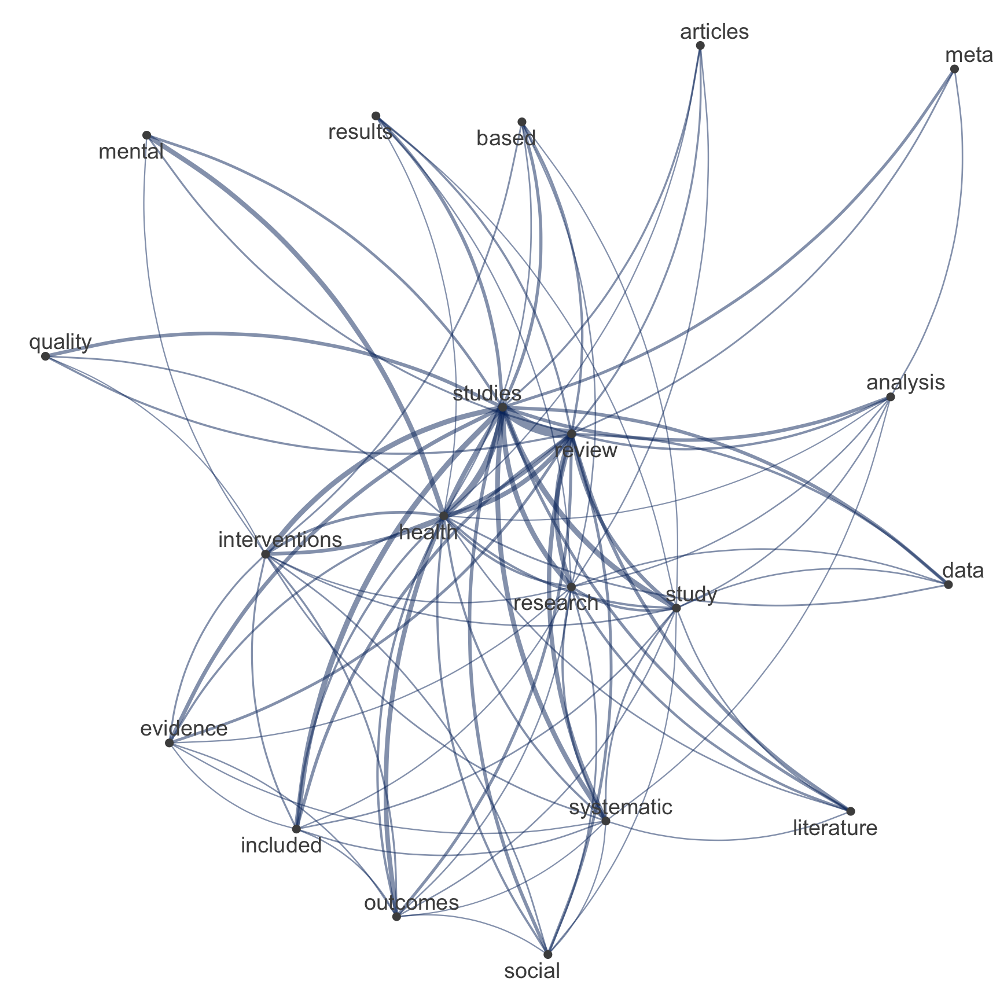

| Sitzung | Datum | Thema (synchron) | Übung (asynchron) | Dozent:in |
|---|---|---|---|---|
1 |
18.04.2024 |
Einführung & Überblick |
AM & CA |
|
üìö |
Teil 1: Systematic Review |
|||
2 |
25.04.2024 |
Einführung in Systematic Reviews I |
R-Einführung |
AM |
3 |
02.05.2024 |
Einführung in Systematic Reviews II |
R-Einführung |
AM |
09.05.2024 |
üèñÔ∏è Feiertag |
R-Einführung |
||
4 |
16.05.2024 |
Automatisierung von SRs & KI-Tools |
R-Einführung |
AM |
23.05.2024 |
üçª WiSo-Projekt-Woche |
R-Einführung |
||
5 |
04.06.2024 |
üçï Gastvortrag: Prof. Dr. Emese Domahidi |
R-Einführung |
ED |
6 |
06.06.2024 |
Automatisierung von SRs & KI-Tools |
R-Einführung |
AM |
üíª |
Teil 2: Text as Data & Unsupervised Machine Learning |
|||
7 |
13.06.2024 |
Introduction to Text as Data |
zur Sitzung |
CA |
8 |
20.06.2024 |
Text processing |
zur Sitzung |
CA |
9 |
27.06.2024 |
Unsupervised Machine Learning I |
zur Sitzung |
CA |
10 |
04.07.2024 |
Unsupervised Machine Learning II |
zur Sitzung |
CA & AM |
11 |
11.07.2024 |
Recap & Ausblick |
zur Sitzung |
CA & AM |
12 |
18.07.2024 |
üèÅ Semesterabschluss |
zur Sitzung |
CA & AM |
Unsupervised Machine Learning (I)
Session 09
27.06.2024
Seminarplan
Agenda
Organisation & Koordination
Fragen zur R und zur Übung
Besprechung der R-Übung
Sollten wir die Daten weiter eingrenzen?
Bitte scannt den QR-Code oder nutzt den folgenden Link für die Teilnahme an einer kurzen Umfrage:
Temporary Access Code: 2250 1954
02:00
Ergebnis
Analyse von Text as Data
Document-Term-Matrices & Unsupervised Text Analysis (Topic Modeling)
Quick reminder: Die tidytext Pipeline
Fokus auf einzelne Wörter, deren Beziehungen zueinander und Sentiments


Silge & Robinson (2017)
Expansion der Pipeline
Fokus auf die Modelierung der Beziehung zwischen Wörtern & Dokumenten


Silge & Robinson (2017)
Possibilities over possibilities
Überblick über verschiedene Methoden der Textanalyse (Grimmer & Stewart, 2013)
Promises & pitfalls
Vier Grundsätze der quantitativen Textanalyse (Grimmer & Stewart, 2013)
1️⃣ All quantitative models of language are wrong — but some are useful.
2️⃣ Quantitative methods for text amplify resources and augment humans.
3️⃣ There is no globally best method for automated text analysis.
4️⃣ Validate, Validate, Validate!
Verteilung von Wörtern auf Themen auf Dokumente
Die Grundidee des (LDA) Topic Modeling

In a nutshell
Grundlagen des Topic Modeling kurz zusammengefasst
Verfahren des unüberwachten maschinellen Lernens, das sich daher insbesondere zur Exploration und Deskription großer Textmengen eignet
Themen werden strikt auf Basis von Worthäufigkeiten in den einzelnen Dokumenten vermeintlich objektiv berechnet, ganz ohne subjektive Einschätzungen und damit einhergehenden etwaigen Verzerrungen
Bekanntesten dieser Verfahren sind LDA (Latent Dirichlet Allocation) sowie die darauf aufbauenden CTM (Correlated Topic Models) und STM (Structural Topic Models)
Text as data in R
Weiteführende Textanalyse mit quanteda und stm
Wenn Missing Values zum Problem werden
Exkurs zu Überprüfung der Daten auf fehlende Werte
Bereinigung der Subsample
Ausschluss von Referenzen mit fehlendem Abstract
# Create subsample
review_subsample <- review_works_correct %>%
# Eingrenzung: Sprache und Typ
filter(language == "en") %>%
filter(type == "article") %>%
# Datentranformation
unnest(topics, names_sep = "_") %>%
filter(topics_name == "field") %>%
filter(topics_i == "1") %>%
# Eingrenzung: Forschungsfeldes
filter(
topics_display_name == "Social Sciences"|
topics_display_name == "Psychology"
)
# Overview
review_subsample %>% glimpse Rows: 45,221
Columns: 45
$ id <chr> "https://openalex.org/W4293003987", "https…
$ title <chr> "The WHO-5 Well-Being Index: A Systematic …
$ display_name <chr> "The WHO-5 Well-Being Index: A Systematic …
$ author <list> [<data.frame[4 x 12]>], [<data.frame[2 x …
$ ab <chr> "The 5-item World Health Organization Well…
$ publication_date <chr> "2015-01-01", "2017-08-28", "2014-01-01", …
$ relevance_score <dbl> 938.7603, 752.3500, 591.2553, 576.1210, 56…
$ so <chr> "Psychotherapy and psychosomatics", "Journ…
$ so_id <chr> "https://openalex.org/S184803288", "https:…
$ host_organization <chr> "Karger Publishers", "SAGE Publishing", NA…
$ issn_l <chr> "0033-3190", "0739-456X", NA, "2214-7829",…
$ url <chr> "https://doi.org/10.1159/000376585", "http…
$ pdf_url <chr> "https://www.karger.com/Article/Pdf/376585…
$ license <chr> "cc-by-nc", NA, NA, "cc-by", NA, NA, "cc-b…
$ version <chr> "publishedVersion", NA, "publishedVersion"…
$ first_page <chr> "167", "93", NA, "89", "55", "2150", "e356…
$ last_page <chr> "176", "112", NA, "106", "64", "2159", "e3…
$ volume <chr> "84", "39", NA, "6", "277", "32", "2", "24…
$ issue <chr> "3", "1", NA, NA, NA, "19", "8", NA, "9", …
$ is_oa <lgl> TRUE, FALSE, TRUE, TRUE, TRUE, FALSE, TRUE…
$ is_oa_anywhere <lgl> TRUE, TRUE, TRUE, TRUE, TRUE, FALSE, TRUE,…
$ oa_status <chr> "hybrid", "green", "bronze", "gold", "bron…
$ oa_url <chr> "https://www.karger.com/Article/Pdf/376585…
$ any_repository_has_fulltext <lgl> FALSE, TRUE, TRUE, TRUE, TRUE, FALSE, TRUE…
$ language <chr> "en", "en", "en", "en", "en", "en", "en", …
$ grants <list> NA, NA, NA, <"https://openalex.org/F43203…
$ cited_by_count <int> 2657, 1375, 2568, 803, 3664, 1553, 2895, 9…
$ counts_by_year <list> [<data.frame[11 x 2]>], [<data.frame[7 x …
$ publication_year <int> 2015, 2017, 2014, 2016, 2020, 2014, 2017, …
$ cited_by_api_url <chr> "https://api.openalex.org/works?filter=cit…
$ ids <list> <"https://openalex.org/W4293003987", "htt…
$ doi <chr> "https://doi.org/10.1159/000376585", "http…
$ type <chr> "article", "article", "article", "article"…
$ referenced_works <list> <"https://openalex.org/W1492518593", "htt…
$ related_works <list> <"https://openalex.org/W3020194755", "htt…
$ is_paratext <lgl> FALSE, FALSE, FALSE, FALSE, FALSE, FALSE, …
$ is_retracted <lgl> FALSE, FALSE, FALSE, FALSE, FALSE, FALSE, …
$ concepts <list> [<data.frame[7 x 5]>], [<data.frame[18 x …
$ topics_i <int> 1, 1, 1, 1, 1, 1, 1, 1, 1, 1, 1, 1, 1, 1, …
$ topics_score <dbl> 0.9926, 0.9050, 0.9995, 0.9987, 0.9999, 1.…
$ topics_name <chr> "field", "field", "field", "field", "field…
$ topics_id <chr> "https://openalex.org/fields/32", "https:/…
$ topics_display_name <chr> "Psychology", "Social Sciences", "Psycholo…
$ publication_year_fct <fct> 2015, 2017, 2014, 2016, 2020, 2014, 2017, …
$ type_fct <fct> article, article, article, article, articl…Bereinigung der Subsample
Ausschluss von Referenzen mit fehlendem Abstract
# Create subsample
review_subsample <- review_works_correct %>%
# Eingrenzung: Sprache und Typ
filter(language == "en") %>%
filter(type == "article") %>%
# Datentranformation
unnest(topics, names_sep = "_") %>%
filter(topics_name == "field") %>%
filter(topics_i == "1") %>%
# Eingrenzung: Forschungsfeldes
filter(
topics_display_name == "Social Sciences"|
topics_display_name == "Psychology"
) %>%
# Eingrenzung: Keine Einträge ohne Abstract
filter(!is.na(ab))
# Overview
review_subsample %>% glimpse Rows: 36,680
Columns: 45
$ id <chr> "https://openalex.org/W4293003987", "https…
$ title <chr> "The WHO-5 Well-Being Index: A Systematic …
$ display_name <chr> "The WHO-5 Well-Being Index: A Systematic …
$ author <list> [<data.frame[4 x 12]>], [<data.frame[2 x …
$ ab <chr> "The 5-item World Health Organization Well…
$ publication_date <chr> "2015-01-01", "2017-08-28", "2014-01-01", …
$ relevance_score <dbl> 938.7603, 752.3500, 591.2553, 576.1210, 56…
$ so <chr> "Psychotherapy and psychosomatics", "Journ…
$ so_id <chr> "https://openalex.org/S184803288", "https:…
$ host_organization <chr> "Karger Publishers", "SAGE Publishing", NA…
$ issn_l <chr> "0033-3190", "0739-456X", NA, "2214-7829",…
$ url <chr> "https://doi.org/10.1159/000376585", "http…
$ pdf_url <chr> "https://www.karger.com/Article/Pdf/376585…
$ license <chr> "cc-by-nc", NA, NA, "cc-by", NA, NA, "cc-b…
$ version <chr> "publishedVersion", NA, "publishedVersion"…
$ first_page <chr> "167", "93", NA, "89", "55", "2150", "e356…
$ last_page <chr> "176", "112", NA, "106", "64", "2159", "e3…
$ volume <chr> "84", "39", NA, "6", "277", "32", "2", "24…
$ issue <chr> "3", "1", NA, NA, NA, "19", "8", NA, "9", …
$ is_oa <lgl> TRUE, FALSE, TRUE, TRUE, TRUE, FALSE, TRUE…
$ is_oa_anywhere <lgl> TRUE, TRUE, TRUE, TRUE, TRUE, FALSE, TRUE,…
$ oa_status <chr> "hybrid", "green", "bronze", "gold", "bron…
$ oa_url <chr> "https://www.karger.com/Article/Pdf/376585…
$ any_repository_has_fulltext <lgl> FALSE, TRUE, TRUE, TRUE, TRUE, FALSE, TRUE…
$ language <chr> "en", "en", "en", "en", "en", "en", "en", …
$ grants <list> NA, NA, NA, <"https://openalex.org/F43203…
$ cited_by_count <int> 2657, 1375, 2568, 803, 3664, 1553, 2895, 9…
$ counts_by_year <list> [<data.frame[11 x 2]>], [<data.frame[7 x …
$ publication_year <int> 2015, 2017, 2014, 2016, 2020, 2014, 2017, …
$ cited_by_api_url <chr> "https://api.openalex.org/works?filter=cit…
$ ids <list> <"https://openalex.org/W4293003987", "htt…
$ doi <chr> "https://doi.org/10.1159/000376585", "http…
$ type <chr> "article", "article", "article", "article"…
$ referenced_works <list> <"https://openalex.org/W1492518593", "htt…
$ related_works <list> <"https://openalex.org/W3020194755", "htt…
$ is_paratext <lgl> FALSE, FALSE, FALSE, FALSE, FALSE, FALSE, …
$ is_retracted <lgl> FALSE, FALSE, FALSE, FALSE, FALSE, FALSE, …
$ concepts <list> [<data.frame[7 x 5]>], [<data.frame[18 x …
$ topics_i <int> 1, 1, 1, 1, 1, 1, 1, 1, 1, 1, 1, 1, 1, 1, …
$ topics_score <dbl> 0.9926, 0.9050, 0.9995, 0.9987, 0.9999, 1.…
$ topics_name <chr> "field", "field", "field", "field", "field…
$ topics_id <chr> "https://openalex.org/fields/32", "https:/…
$ topics_display_name <chr> "Psychology", "Social Sciences", "Psycholo…
$ publication_year_fct <fct> 2015, 2017, 2014, 2016, 2020, 2014, 2017, …
$ type_fct <fct> article, article, article, article, articl…Aus Text werden Zahlen
Document-Term-Matrix [DTM] im Fokus
Silge & Robinson (2017)
Kurzer Rückblick auf die Document-Term Matrix [DTM]
Häufig verwendete Datenstruktur für (klassische) Textanalyse
Eine Matrix, bei der:
jede Zeile steht für ein Dokument (z.B. ein Abstract),
jede Spalte einen Begriff darstellt, und
jeder Wert (in der Regel) die Häufigkeit des Begriffs in einem Dokument enthält.

Schritt für Schritt zur DTM
Textverarbeitung entlang der tidytext Pipeline: Tokenize
# A tibble: 4,872,424 × 2
id text
<chr> <chr>
1 https://openalex.org/W4293003987 5
2 https://openalex.org/W4293003987 item
3 https://openalex.org/W4293003987 world
4 https://openalex.org/W4293003987 health
5 https://openalex.org/W4293003987 organization
6 https://openalex.org/W4293003987 index
7 https://openalex.org/W4293003987 5
8 https://openalex.org/W4293003987 widely
9 https://openalex.org/W4293003987 questionnaires
10 https://openalex.org/W4293003987 assessing
11 https://openalex.org/W4293003987 subjective
12 https://openalex.org/W4293003987 psychological
13 https://openalex.org/W4293003987 publication
14 https://openalex.org/W4293003987 1998
15 https://openalex.org/W4293003987 5
# ℹ 4,872,409 more rowsSchritt für Schritt zur DTM
Textverarbeitung entlang der tidytext Pipeline: Tokenize ▶️ Summarize
# A tibble: 3,280,664 × 3
id text n
<chr> <chr> <int>
1 https://openalex.org/W1000529773 aim 1
2 https://openalex.org/W1000529773 anne 1
3 https://openalex.org/W1000529773 approaches 1
4 https://openalex.org/W1000529773 critical 1
5 https://openalex.org/W1000529773 current 1
6 https://openalex.org/W1000529773 dick 1
7 https://openalex.org/W1000529773 effective 1
8 https://openalex.org/W1000529773 employed 1
9 https://openalex.org/W1000529773 enhancing 1
10 https://openalex.org/W1000529773 evaluation 1
11 https://openalex.org/W1000529773 examined 1
12 https://openalex.org/W1000529773 explored 1
13 https://openalex.org/W1000529773 extended 2
14 https://openalex.org/W1000529773 girls 1
15 https://openalex.org/W1000529773 government 1
# ℹ 3,280,649 more rowsSchritt für Schritt zur DTM
Textverarbeitung entlang der tidytext Pipeline: Tokenize ▶️ Summarize ▶️ DTM
# Create tidy data
subsample_tidy <- review_subsample %>%
tidytext::unnest_tokens("text", ab) %>%
filter(!text %in% tidytext::stop_words$word)
# Create summarized data
subsample_summarized <- subsample_tidy %>%
count(id, text)
# Create DTM
subsample_dtm <- subsample_summarized %>%
cast_dtm(id, text, n)
# Preview
subsample_dtm<<DocumentTermMatrix (documents: 36654, terms: 122147)>>
Non-/sparse entries: 3280664/4473895474
Sparsity : 100%
Maximal term length: 188
Weighting : term frequency (tf)Einfach mit tidytext, präzise mit quanteda
Vergleich von Texttransformation mit verschiedenen Paketen
# Create tidy data
subsample_tidy <- review_subsample %>%
tidytext::unnest_tokens("text", ab) %>%
filter(!text %in% tidytext::stop_words$word)
# Create summarized data
subsample_summarized <- subsample_tidy %>%
count(id, text)
# Create DTM
subsample_dtm <- subsample_summarized %>%
cast_dtm(id, text, n)
# Preview
subsample_dtm# Create corpus
quanteda_corpus <- review_subsample %>%
quanteda::corpus(
docid_field = "id",
text_field = "ab"
)
# Tokenize
quanteda_token <- quanteda_corpus %>%
quanteda::tokens(
remove_punct = TRUE,
remove_symbols = TRUE,
remove_numbers = TRUE,
remove_url = TRUE,
split_tags = FALSE # keep hashtags and mentions
) %>%
quanteda::tokens_tolower() %>%
quanteda::tokens_remove(
pattern = stopwords("en")
)
# Convert to Document-Feature-Matrix (DFM)
quanteda_dfm <- quanteda_token %>%
quanteda::dfm()Netzwerk der Top-Begriffe
Vergleich zwischen tidytext & quanteda
# Extract most common hashtags
top_features_tidy <- subsample_tidy %>%
count(text, sort = TRUE) %>%
slice_head(n = 20) %>%
pull(text)
# Visualize
subsample_tidy %>%
count(id, text, sort = TRUE) %>%
filter(!is.na(text)) %>%
cast_dfm(id, text, n) %>%
quanteda::fcm() %>%
quanteda::fcm_select(
pattern = top_features_tidy,
case_insensitive = FALSE
) %>%
quanteda.textplots::textplot_network(
edge_color = "#04316A"
)
Netzwerk der Top-Begriffe
Vergleich zwischen tidytext & quanteda
Netzwerk der Top-Begriffe
Vergleich zwischen tidytext & quanteda
Neuer Input in die Pipeline
Unsupervised learning example: Topic modeling
Silge & Robinson (2017)
Building a shared vocabulary … again
Grundbegriffe und Definitionen im Kontext des Topic Modelings
K: Anzahl der Themen, die für ein bestimmtes Themenmodell berechnen werden.Word-Topic-Matrix: Matrix, die die bedingte Wahrscheinlichkeit (beta) beschreibt, mit der ein Wort in einem bestimmten Thema vorkommt.Document-Topic-Matrix: Matrix, die die bedingte Wahrscheinlichkeit (gamma) beschreibt, mit der ein Thema in einem bestimmten Dokument vorkommt.
Beyond LDA
Verschiedene Ansätze der Themenmodellierung
- Latent Dirichlet Allocation [
LDA] (Blei et al., 2003) ist ein probabilistisches generatives Modell, das davon ausgeht, dass jedes Dokumentin einem KorpuseineMischung von Themen ist und jedes Wort im Dokument einem der Themen des Dokuments zuzuordnenist. - Structural Topic Modeling [
STM] (Roberts et al., 2016; Roberts et al., 2019) erweitert LDA durch die Einbeziehung von Kovariaten auf Dokumentenebene und ermöglicht die Modellierung des Einflusses externer Faktoren auf die Themenprävalenz. - Word embeddings (
Word2Vec(Mikolov et al., 2013) ,Glove(Pennington et al., 2014)) stellen Wörter als kontinuierliche Vektoren in einem hochdimensionalen Raum dar und erfassen semantische Beziehungen zwischen Wörtern basierend auf ihrem Kontext in den Daten. - Topic Modeling mit Neural Networks (
BERTopic(Devlin et al., 2019),Doc2Vec(Le & Mikolov, 2014)) nutzt Deep Learning-Architekturen, um automatisch latente Themen aus Textdaten zu lernen
Preparation is everything
Empfohlene Vorverarbeitungsschritte für das Topic Modeling nach Maier et al. (2018)
- ⚠️ Deduplication;
- ✅ tokenization;
- ✅ transforming all characters to lowercase;
- ✅ removing punctuation and special characters;
- ✅ Removing stop-words;
- ⚠️ term unification (lemmatizing or stemming);
- üèóÔ∏è relative pruning (attributed to Zipf‚Äôs law);
Ein erstes Modell
Schätzung und Sichtung eines Structural Topic Models mit 20 Themen
Ein erster Überblick
Verteilung und Beschreibung der Themen
Selber Überblick, anderes Format
Verteilung und Beschreibung der Themen
Expand for full code
top_gamma <- stm_mdl %>%
tidy(matrix = "gamma") %>%
dplyr::group_by(topic) %>%
dplyr::summarise(gamma = mean(gamma), .groups = "drop") %>%
dplyr::arrange(desc(gamma))
top_beta <- stm_mdl %>%
tidytext::tidy(.) %>%
dplyr::group_by(topic) %>%
dplyr::arrange(-beta) %>%
dplyr::top_n(10, wt = beta) %>%
dplyr::select(topic, term) %>%
dplyr::summarise(terms_beta = toString(term), .groups = "drop")
top_topics_terms <- top_beta %>%
dplyr::left_join(top_gamma, by = "topic") %>%
dplyr::mutate(
topic = reorder(topic, gamma)
)
# Preview
top_topics_terms %>%
mutate(across(gamma, ~round(.,3))) %>%
dplyr::arrange(-gamma) %>%
gt() %>%
gt::tab_options(
table.font.size = "14px") %>%
cols_label(
topic = "Topic",
terms_beta = "Top Terms (based on beta)",
gamma = "Gamma"
) %>%
gtExtras::gt_theme_538()| Topic | Top Terms (based on beta) | Gamma |
|---|---|---|
| 16 | research, literature, review, paper, systematic, future, study, analysis, findings, knowledge | 0.142 |
| 19 | studies, interventions, review, systematic, evidence, outcomes, included, quality, intervention, health | 0.096 |
| 13 | health, mental, care, review, support, family, children, social, factors, studies | 0.079 |
| 9 | learning, students, education, school, review, skills, educational, teachers, teaching, study | 0.072 |
| 11 | study, literature, research, can, work, development, review, also, human, economic | 0.068 |
| 15 | studies, ci, effect, meta-analysis, depression, p, trials, anxiety, effects, interventions | 0.061 |
| 14 | social, media, information, use, digital, data, technology, communication, review, research | 0.060 |
| 17 | studies, children, relationship, review, language, variables, research, factors, results, effects | 0.052 |
| 6 | prevalence, studies, covid-19, suicide, among, risk, pandemic, countries, ci, vaccine | 0.050 |
| 1 | sleep, studies, eating, cognitive, review, associated, weight, body, may, association | 0.044 |
| 2 | health, studies, women, gender, review, care, social, services, cultural, access | 0.043 |
| 18 | studies, health, used, measures, review, tools, instruments, assessment, training, n | 0.039 |
| 3 | treatment, disorder, disorders, patients, ptsd, symptoms, clinical, studies, therapy, anxiety | 0.036 |
| 7 | articles, review, adolescents, studies, literature, search, use, results, systematic, databases | 0.036 |
| 4 | patients, articles, review, music, therapy, cancer, can, study, pain, life | 0.032 |
| 12 | violence, studies, use, sexual, risk, h3, ipv, substance, alcohol, review | 0.031 |
| 5 | et, al, university, review, gt, literature, lt, author, p, search | 0.030 |
| 8 | physical, training, studies, disability, exercise, disabilities, employment, ed, review, strength | 0.015 |
| 20 | attachment, studies, scholar, google, science, review, social, styles, welfare, research | 0.009 |
| 10 | de, la, y, en, los, e, 的, el, se, que | 0.004 |
Verbindung der Themen untereinander
Korrelation der Themen
Prominente Wörter einzelner Themen
Überblick über Top-Begriffe verschiedener Themen
Topic 16 Top Words:
Highest Prob: research, literature, review, paper, systematic, future, study
FREX: tourism, sustainable, sustainability, originality, innovation, conceptual, agenda
Lift: paradigmatic, hrd, edlm, positivist, internationalisation, tccm, wom
Score: tourism, research, literature, paper, leadership, themes, sustainable Topic 10 Top Words:
Highest Prob: de, la, y, en, los, e, 的
FREX: resultados, foram, que, sobre, intervenciones, riesgo, uma
Lift: criterios, efecto, así, comparación, cumplieron, debido, depresión
Score: de, la, 的, en, los, y, que üìã Hands on working with R
Verschiedene R-Übungsaufgaben zum Inhalt der heutigen Sitzung
üß™ And now ‚Ķ you: Textanalyse mit R
Next Steps: Wiederholung der Inhalte
- Laden Sie die auf StudOn bereitgestellten Dateien für die Sitzungen herunter
- Laden Sie die .zip-Datei in Ihren RStudio Workspace
- Navigieren Sie zu dem Ordner, in dem die Datei
ps_24_binder.Rprojliegt. Öffnen Sie diese Datei mit einem Doppelklick. Nur dadurch ist gewährleistet, dass alle Dependencies korrekt funktionieren. - Öffnen Sie die Datei
exercise-09.qmdim Ordnerexercisesund lesen Sie sich gründlich die Anweisungen durch. - Tipp: Sie finden alle in den Folien verwendeten Code-Bausteine in der Datei showcase.qmd (für den “rohen” Code) oder showcase.html (mit gerenderten Ausgaben).